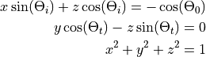
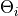
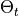
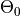
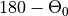

xopto.util.sampler module¶
- class ConstantSampler(value: float)[source]¶
Bases:
xopto.util.sampler.UniformSamplerA sampler that returns a constant value.
- Parameters
value (float) – Constant value that will be returned by the sampler.
- todict() → dict[source]¶
Export object to a dict.
- Returns
data – Instance data exported to a dict.
- Return type
dict
- property value: float¶
Value of the sampler.
- class IncidenceTiltSampler(incidence: xopto.util.sampler.Sampler, tilt: xopto.util.sampler.Sampler, design_angle: float)[source]¶
Bases:
xopto.util.sampler.SamplerSamples the incidence angle of a collimated source and tilt of a surface detector from the given distribution. The angle between the collimated incident beam and the reference direction of the detector (design angle) is kept constant.
- Parameters
incidence (Sampler) – Sampler of the angle of incidence (rad). The angle is measured in the incidence plane x-z from the z axis. The sampled direction vector of the collimated beam lies in the x-z plane.
tilt (Sampler) – Sampler of the detector tilt angle (rad). The detector direction lies in the x-z plane that is tilted/rotated around the x axis. The angle of tilt is defined as the angle between the tilted plane and the x-z plane.
design_angle (float) – Angle between the source and detector (rad) that is kept constant.
- property design_angle: float¶
Design angle (rad).
- classmethod fromdict(data: dict) → xopto.util.sampler.IncidenceTiltSampler[source]¶
Create a new instance of
IncidenceTiltSamplerfrom a dict.- Parameters
data (dict) – Data that were exported by the
IncidenceTiltSampler.todict()method.- Returns
sampler – A new sampler instance.
- Return type
- todict() → dict[source]¶
Export object to a dict.
- Returns
data – Instance data exported to a dict.
- Return type
dict
- update(src: xopto.mcml.mcsource.line.Line, detector: xopto.mcml.mcdetector.symmetric.SymmetricX, sample: Optional[dict] = None)[source]¶
Update the Monte Carlo source and detector with the sampled propagation directions.
- Parameters
src (xopto.mcml.mc.mcsource.Line) – Source that will be updated with a new direction.
detector (xopto.mcml.mc.mcdetector.Detector) – Detector that will be updated with the new reference direction.
- Returns
src (xopto.mcml.mc.mcsource.Line) – The updated source.
detector (xopto.mcml.mc.mcdetector.SymmetricX) – The updated detector.
- class LayerSampler(mua: xopto.util.sampler.Sampler, musr: xopto.util.sampler.Sampler, d: xopto.util.sampler.Sampler, n: xopto.util.sampler.Sampler, pf: xopto.util.sampler.PfSampler)[source]¶
Bases:
xopto.util.sampler.SamplerSamples layer parameters.
- Parameters
- property d: xopto.util.sampler.Sampler¶
Layer thickness sampler.
- classmethod fromdict(data: dict) → xopto.util.sampler.LayerSampler[source]¶
Create a new instance of
LayerSamplerfrom a dict.- Parameters
data (dict) – Data that were exported by the
LayerSampler.todict()method.- Returns
sampler – A new sampler instance.
- Return type
- property mua: xopto.util.sampler.Sampler¶
Absorption coefficient sampler.
- property musr: xopto.util.sampler.Sampler¶
Reduced scattering coefficient sampler.
- property n: xopto.util.sampler.Sampler¶
Refractive index sampler.
- property pf: xopto.util.sampler.Sampler¶
Scattering phase function sampler.
- todict() → dict[source]¶
Export object to a dict.
- Returns
data – Instance data exported to a dict.
- Return type
dict
- update(layer: xopto.mcml.mclayer.layer.Layer, sample: Optional[dict] = None) → xopto.mcml.mclayer.layer.Layer[source]¶
Update the layer with a new sample.
- Parameters
layer (xopto.mcml.mc.mclayer.Layer) – Layer to update.
sample (dict) – Optional sample. If None, a new sample is generated.
- Returns
layer – Updated input layer.
- Return type
xopto.mcml.mc.mclayer.Layer
- class MaterialSampler(mua: xopto.util.sampler.Sampler, musr: xopto.util.sampler.Sampler, n: xopto.util.sampler.Sampler, pf: xopto.util.sampler.PfSampler)[source]¶
Bases:
xopto.util.sampler.SamplerSamples a material.
- Parameters
- classmethod fromdict(data: dict) → xopto.util.sampler.MaterialSampler[source]¶
Create a new instance of
MaterialSamplerfrom a dict.- Parameters
data (dict) – Data that were exported by the
MaterialSampler.todict()method.- Returns
sampler – A new sampler instance.
- Return type
- property mua: xopto.util.sampler.Sampler¶
Absorption coefficient sampler.
- property musr: xopto.util.sampler.Sampler¶
Reduced scattering coefficient sampler.
- property n: xopto.util.sampler.Sampler¶
Refractive index sampler.
- property pf: xopto.util.sampler.Sampler¶
Scattering phase function sampler.
- todict() → dict[source]¶
Export object to a dict.
- Returns
data – Instance data exported to a dict.
- Return type
dict
- update(layer: xopto.mcbase.mcmaterial.Material, sample: Optional[dict] = None) → xopto.mcbase.mcmaterial.Material[source]¶
Update the material with a new sample.
- Parameters
layer (mcmaterial.Material) – Material to update.
sample (dict) – Optional sample. If None, a new sample is generated.
- Returns
layer – Updated material.
- Return type
- class MultilayerSampler(samplers=typing.Tuple[xopto.util.sampler.LayerSampler])[source]¶
Bases:
xopto.util.sampler.Sampler- classmethod fromdict(data: dict) → xopto.util.sampler.MultilayerSampler[source]¶
Create a new instance of
MultilayerSamplerfrom a dict.- Parameters
data (dict) – Data that were exported by the
MultilayerSampler.todict()method.- Returns
sampler – A new sampler instance.
- Return type
- todict() → dict[source]¶
Export object to a dict.
- Returns
data – Instance data exported to a dict.
- Return type
dict
- update(layers: xopto.mcml.mclayer.layer.Layers, sample: Optional[dict] = None) → xopto.mcml.mclayer.layer.Layers[source]¶
Update the layer stack with a new sample.
- Parameters
layers (xopto.mcml.mc.mclayer.Layers) – Layer stack to update.
sample (List[dict]) – Optional sample. If None, a new sample is generated.
- Returns
layers – Updated layer stack.
- Return type
xopto.mcml.mc.mclayer.Layers
- class MultilayerSfdi(layers: xopto.util.sampler.MultilayerSampler, source_detector: xopto.util.sampler.IncidenceTiltSampler, sample_count: int = 0)[source]¶
Bases:
objectA sampler for multilayer SFDI Monte Carlo simulations.
- Parameters
layers (MultilayerSampler) – Sampler for the parameters of the layer stack.
source_detector (SfdiSourceDetectorSampler) – Sampler for the parameters of the photon packet source and top surface detector.
sample_count (int) – Zero-based index of the first sample.
- mc_obj(acceptance: float = 1.5707963267948966, **kwargs) → xopto.mcml.mc.Mc[source]¶
Create and initialize a new Monte Carlo simulation model.
- Parameters
acceptance (float) – Acceptance angle of the detector.
kwargs (dict) – Optional keyword arguments passed to the
__init__()constructor.
- Returns
mcobj – A new Monte Carlo simulator instance.
- Return type
- rmax(mcobj: xopto.mcml.mc.Mc) → numpy.ndarray[source]¶
Estimate simulation radius for the given simulator instance.
- Parameters
mcobj (xopto.mcml.mc.Mc) – Monte Carlo simulator instance.
- Returns
rmax – A numpy vector of simulation radius for all the sample layers (excluding the topmost and bottommost layers).
- Return type
np.ndarray
- property sample_index: int¶
Number of the current sample (1 for the first sample)
- update(mcobj: xopto.mcml.mc.Mc) → dict[source]¶
Update the Monte Carlo simulation parameters with a new sample. This call will update the sample index by 1.
- Parameters
mcobj (xopto.mcml.mc.Mc) – Monte Carlo simulator instance.
- Returns
sample – The sample that was used to update the simulator as a dict with keys “layers” (a list of samples that were used to update the sample layers, “source_detector” (sample that was used to update the photon packet source and top surface detector).
- Return type
dict
- class NormalSampler(mean: float, sigma: float, clip: float = 5)[source]¶
Bases:
xopto.util.sampler.SamplerSampler that follows a Normal distribution with the given mean and standard deviation.
- Parameters
mean (float) – Mean value of the distribution.
sigma (float) – Standard deviation of the distribution.
clip (float) – Clip the values to
 .
.
- property clip: float¶
Clip value range to mean ± clip*sigma.
- property mean: float¶
Mean value of the distribution.
- property sigma: float¶
Standard deviation of the distribution.
- class PfSampler(pf_type: str, pf_args: Tuple[xopto.util.sampler.Sampler])[source]¶
Bases:
xopto.util.sampler.SamplerMonte Carlo simulator scattering phase function sampler.
- Parameters
pf_type (mcpf.PfBase) – Scattering phase function type.
pf_args (Tuple[Sampler]) – Samplers of the scattering phase function arguments.
- classmethod fromdict(data: dict) → xopto.util.sampler.PfSampler[source]¶
Create a new instance from a dict.
- Parameters
data (dict) – Instance data that were exported to a dict.
- property pf_args: Tuple[xopto.util.sampler.Sampler]¶
Samplers of the scattering phase function arguments.
- property pf_type: xopto.mcbase.mcpf.pfbase.PfBase¶
Scattering phase function type used by the sampler.
- class Sampler[source]¶
Bases:
object- classmethod fromdict(data: dict) → xopto.util.sampler.Sampler[source]¶
Create a new instance from the data in the dict.
- Parameters
data (dict) – A sampler instance exported to dict.
- Returns
sampler – A new sampler instance.
- Return type
- class SequenceSampler(sequence: numpy.ndarray, start: int = 0)[source]¶
Bases:
xopto.util.sampler.SamplerA sequence sampler.
- Parameters
sequence (np.ndarray) – A sequence of vales to sample. The array is sampled from a flat view.
start (int) – Zero-based index of the first sample.
Note
After reaching the end of sequence, the sampling will continue with the first element in the sequence.
- property pos: int¶
Zero-based index of the next sample.
- reset()[source]¶
Reset the sequence sampler to start from the first item as specified by the start parameter of the constructor.
- property sequence: int¶
The sampled data sequence.
- class UniformSampler(start: float, stop: float, logscale: bool = False)[source]¶
Bases:
xopto.util.sampler.SamplerRandomly samples values from interval [start, stop]. Note that the values of start and stop can be provided in arbitrary order.
- Parameters
start (float) – Start of the sampling interval.
stop (float) – Stop/end of the sampling interval.
logscale (bool) – Use logarithmic sampling on the start-stop interval.
- property interval: Tuple[float, float]¶
Sampling interval as a tuple (start, stop)
- property logscale: bool¶
Sampling in logarithmic scale.
- property max: float¶
Upper bound of the sampling interval.
- property min: float¶
Lower bound of the sampling interval.
- property start: float¶
Start of the sampling interval.
- property stop: float¶
Stop of the sampling interval.
- detector_direction(incidence: float, tilt: float, design_angle: float, verbose: bool = False) → Tuple[float, float, float][source]¶
Determines the direction vector of the detector by solving a quadratic equation that arises from the following system of equations:

In the above equations  is the angle of incidence,  the detector tilt angle and  the design angle, i.e. the angle between the source and detector.
The first equation is the dot product of the detector direction vector and the direction of the incident beam. The angle between the two is the design angle . The second equation is the dot product of the detector direction vector and the normal of the tilted plane that contains the detector direction vector. Note that the tilted plane is the x-z plane rotated around the x axis.
The solution with negative z component that has a polar angle in the x-z plane smaller than the polar angle of the incident source is taken (detector always rotates from source towards the x axis).
- Parameters
incidence (float) – Source incidence angle (radians) in the x-z plane, measured from the z axis.
tilt (float) – Detector tilt angle (radians) measured as the angle between the tilted plane (x-z plane rotated around the x axis) and the z axis.
design_angle (float) – Design angle between the source and detector (radians).
verbose (bool) – Enables verbose report.
- Returns
dir – Direction vector of the detector.
- Return type
np.ndarray